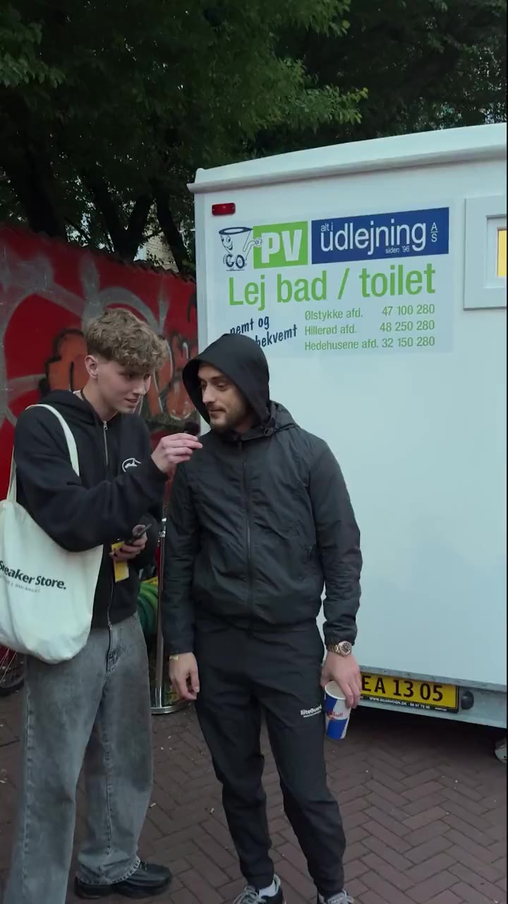
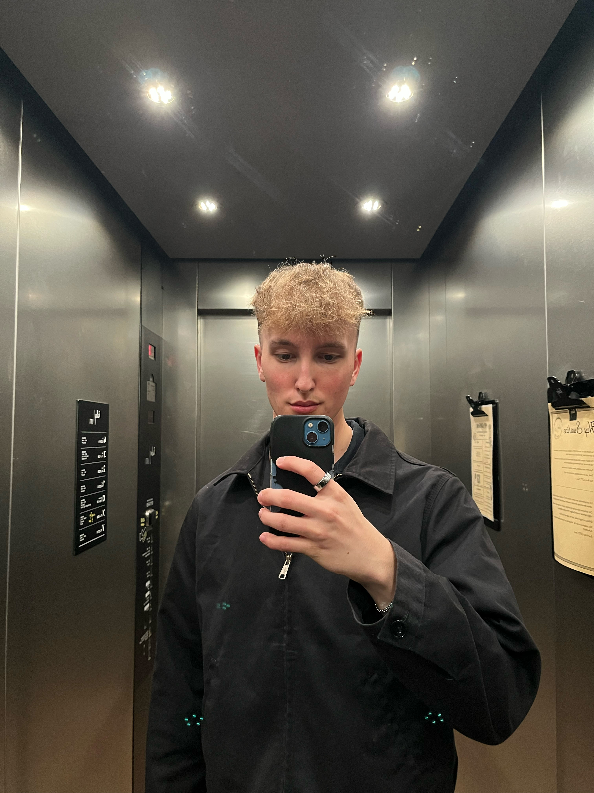

Top Comfy View caseVideo editor · Graphic designer · Content creator — Aarhus, Denmark Available for freelance · Full-time from December 2026
I'm Philip. I shoot, edit and design content.
I work across short-form video, campaign design and motion — currently as a Graphic Designer Apprentice at BET25, alongside artist interviews and event content through Top Comfy.
- Video Editing
- Content Production
- Motion Graphics
- Graphic Design
Showreel in progress
A new reel is currently in the edit. Until then, explore the selected work below.
01
Selected work
Four projects showing how I work across content, editing and campaign design. Open a case to see my role, process and result.
02
Field work
Some of the best content happens when there is no second take.
Red Bull event coverage
Red Bull
Through Top Comfy, our team was invited by Red Bull to cover Distortion in 2025 and 2026, as well as Red Bull SoundClash in 2026. My work included filming artists at close range, handling production equipment and creating social content in a fast-moving event environment with backstage access.
Covered
Distortion 2025
SoundClash 2026
Distortion 2026
4+
Years using Adobe tools
580K+
Organic views
Across Top Comfy and personal content
94K+
On one interview
Maluda interview on TikTok
510+
Followers across own platforms
How I think
A strong edit starts before the timeline. I look for the moment that makes people care, build the pace around it and use sound, colour and motion to make it land.
01
Find the moment
The strongest answer, image or movement becomes the centre of the edit.
02
Build the rhythm
Pacing, sound and timing decide whether people keep watching.
03
Finish the feeling
Colour, typography and motion should support the story, not compete with it.
03
About

assets/img/philip-placeholder.jpg
I'm Philip — a 22-year-old video editor and graphic designer based in Aarhus. I like being close to the whole process, from the rough idea to the final export.
During the day, I work as a Graphic Designer Apprentice at BET25, where I turn real briefs into campaign graphics, motion and finished marketing assets. It has taught me how to work with real deadlines, feedback and campaign rollouts.
Outside BET25, I produce artist interviews and event content with Top Comfy and experiment with storytelling, cinematography and motion under my own name. Across those projects, I work through most of the production process: planning, filming, audio, editing, sound, subtitles and colour.
I originally trained in web development. That still shapes how I work: I think about structure, layout and the person using the final result, as well as how the edit looks and feels.
When I'm not working, I'm usually working out or out for a run.
04
Toolkit
The tools and skills I use to take work from rough idea to finished delivery.
Pr
Premiere Pro
Editing, structure, pacing and final delivery.
Ae
After Effects
Motion graphics, compositing and custom visual sequences.
Dr
DaVinci Resolve
Colour grading and finishing from log footage.
Ps
Photoshop
Campaign visuals, retouching and social assets.
Id
InDesign
Structured layouts and print-ready design.
Fi
Figma
Concepts, layouts and early visual direction.
Premiere Pro
Short-Form Editing
Hooks, structure and pacing for social content.
DJI Pocket 3 · Audio
Camera & Audio
DJI Pocket 3, wireless microphones and B-roll.
Video & content
Storytelling
Turning interviews and raw footage into clear narratives.
DaVinci Resolve
Colour Grading
Building mood and consistency from log footage.
After Effects
Motion Graphics
Typography, animation, compositing and visual effects.
Photoshop · InDesign
Campaign Design
From initial brief and visual direction to final assets.
05
My journey
The short version of how development, design and content came together.
-
01 Dec 2020 – Oct 2022 Web development
Completed my Web Developer education at Viden Djurs in Grenaa after studying at Hansenberg and TECHCOLLEGE Aalborg. It gave me a foundation in digital structure, layout and user experience.
-
02 2023 – 2026 Graphic Designer apprenticeship
Studying at Aarhus Tech while working as a Graphic Designer Apprentice at BET25. The education finishes in October 2026 and the apprenticeship ends in November 2026.
-
03 May 2025 Top Comfy
Started producing artist interviews, festival coverage and short-form content for TikTok and Instagram.
-
04 2026 Personal content
Started publishing work under my own name to explore storytelling, cinematography, motion and more experimental editing.
-
05 December 2026 Available for what's next
Available for full-time opportunities while continuing to take on selected freelance projects.
06
Questions
A few things people usually want to know before reaching out.
01 Are you available for freelance work right now?
Yes — I'm taking on freelance and selected projects now, and open to full-time roles from December 2026, once my apprenticeship and education wrap up.
02 Do you work remotely, or only around Aarhus?
Both. I'm based in Aarhus and happy to work remotely or on-site. For full-time roles I'd prefer Aarhus or somewhere within easy reach, though I'm open to other cities at a reasonable distance. For freelance, remote or on-site both work.
03 Do you handle filming, or just editing?
Both, depending on the project — sometimes I plan and shoot as well as edit, sometimes I'm handed the footage and take it through editing, colour and sound. The role breakdown is listed on each project under Selected Work.
04 How long does a project usually take?
It depends on the scope, so I'd rather give you a real timeline once I know the brief than guess here.
07
Need an editoror designer?
I'm available for freelance projects and open to full-time opportunities from December 2026. If you have a role, a project or even a rough idea, send me a message.
philip.ronge@gmail.com